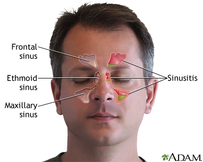

sinus
Non-Harmfull and can be cured using home remedies
Sinusitis is an inflammation, or swelling, of the tissue lining your sinuses. Sinuses are structures inside your face that are normally filled with air. Bacterial infections, viral infections and allergies can irritate them, causing them to get blocked and filled with fluid. This can cause pressure and pain in your face, nasal congestion (a stuffy nose) and other symptoms.
Sinusitis is also sometimes called rhinosinusitisSinusitis is an inflammation, or swelling, of the tissue lining your sinuses. Sinuses are structures inside your face that are normally filled with air. Bacterial infections, viral infections and allergies can irritate them, causing them to get blocked and filled with fluid. This can cause pressure and pain in your face, nasal congestion (a stuffy nose) and other symptoms.
Sinusitis is also sometimes called rhinosinusitis
👉symptoms of sinus
 Postnasal drip (mucus dripping down your throat).
Runny nose with thick yellow or green mucus.
Stuffy nose.
Facial pressure (particularly around your nose, eyes and forehead). This might get worse when you move your head around or bend over.
Pressure or pain in your teeth.
Ear pressure or pain.
Fever.
Bad breath (halitosis) or a bad taste in your mouth.
Cough.
Headache.
Tiredness.
Postnasal drip (mucus dripping down your throat).
Runny nose with thick yellow or green mucus.
Stuffy nose.
Facial pressure (particularly around your nose, eyes and forehead). This might get worse when you move your head around or bend over.
Pressure or pain in your teeth.
Ear pressure or pain.
Fever.
Bad breath (halitosis) or a bad taste in your mouth.
Cough.
Headache.
Tiredness.
👉causes of sinus
The common cold.
The flu (influenza).
Streptococcus pneumoniae bacteria.
Haemophilus influenza bacteria.
Moraxella catarrhalis bacteria.